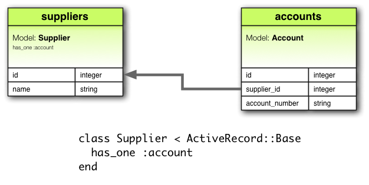
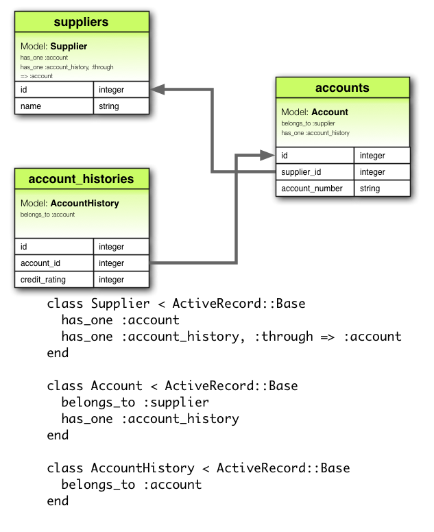
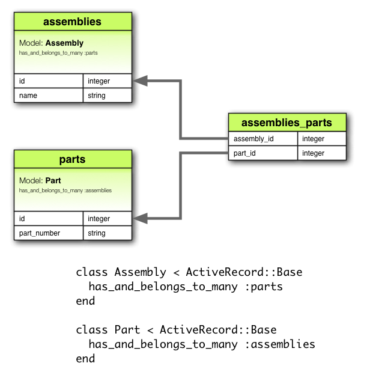

1 為什麼需要關聯？
為什麼 Model 之間要有關聯？關聯簡化了常見的操作，程式碼撰寫起來更簡單。比如，一個簡單的 Rails 應用程式，有顧客與訂單 Model。每個顧客可以有多筆訂單。若沒有關聯功能，則 Model 看起來會像是：
class Customer < ActiveRecord::Base end class Order < ActiveRecord::Base end
為顧客新增訂單：
@order = Order.create(order_date: Time.now, customer_id: @customer.id)
刪除顧客以及顧客的所有訂單：
@orders = Order.where(customer_id: @customer.id) @orders.each do |order| order.destroy end @customer.destroy
有了 Active Record 關聯，可以告訴 Rails Model 之間的關聯，來精簡上例。以下是簡化後的程式碼：
class Customer < ActiveRecord::Base has_many :orders, dependent: :destroy end class Order < ActiveRecord::Base belongs_to :customer end
改寫成這樣後，給顧客建新訂單變得簡單許多：
@order = @customer.orders.create(order_date: Time.now)
刪除顧客以及顧客的所有訂單簡單多了：
@customer.destroy
要了解各種關聯的用途，請閱讀下一節。下一節介紹關聯種類、各種關聯的秘訣與小技巧。本篇最後一節是 Rails 關聯的可用選項與方法的完整參考手冊。
2 關聯種類
在 Rails 的世界裡，關聯連結了兩個 Active Record Model。關聯使用宏風格（macro-style）的語法來呼叫，以宣告的形式來加入功能到 Model。舉例來說，透過宣告一個 Model 屬於另一個，來告訴 Rails 如何維護兩者之間的主外鍵，同時獲得許多實用的方法。Rails 支援以下六種關聯：
belongs_tohas_onehas_manyhas_many :throughhas_one :throughhas_and_belongs_to_many
本篇之後細講如何使用各種關聯，首先介紹各種關聯的應用場景。
2.1 belongs_to 關聯
belongs_to 關聯建立兩個 Model 之間的一對一關係。belongs_to 關聯宣告一個 Model 實體，屬於另一個 Model 實體。舉例來說，應用程式有顧客與訂單兩個 Model，每筆訂單只屬於一位顧客，訂單 Model 便如此宣告：
class Order < ActiveRecord::Base belongs_to :customer end

belongs_to 宣告必須使用單數形式。上例若使用複數形式，會報 "uninitialized constant Order::Customers" 錯誤。這是因為 Rails 使用關聯名稱來推出類別名稱。關聯名稱錯用複數，推斷出來的類別名稱自然也錯了。
上例對應的遷移看起來會像是：
class CreateOrders < ActiveRecord::Migration
def change
create_table :customers do |t|
t.string :name
t.timestamps
end
create_table :orders do |t|
t.belongs_to :customer
t.datetime :order_date
t.timestamps
end
end
end
2.2 has_one 關聯
has_one 關聯建立兩個 Model 之間的一對一關係，但語義和結果與 belongs_to 不同。has_one 關聯宣告一個 Model 實體，含有（或持有）另一個 Model 實體。舉例來說，每個供應商在應用程式裡只有一個帳號，供應商 Model 便如此宣告：
class Supplier < ActiveRecord::Base has_one :account end

上例對應的遷移看起來會像是：
class CreateSuppliers < ActiveRecord::Migration
def change
create_table :suppliers do |t|
t.string :name
t.timestamps
end
create_table :accounts do |t|
t.belongs_to :supplier
t.string :account_number
t.timestamps
end
end
end
2.3 has_many 關聯
has_many 關聯建立兩個 Model 之間的一對多關係。通常 has_many 另一邊對應的是 belongs_to 關聯。has_many 關聯宣告一個 Model 實體，有零個或多個另一個 Model 實體。舉例來說，應用程式有顧客與訂單兩個 Model，顧客可有多筆訂單，訂單 Model 便如此宣告：
class Customer < ActiveRecord::Base has_many :orders end
宣告 has_many 關聯名稱採複數。

上例對應的遷移看起來會像是：
class CreateCustomers < ActiveRecord::Migration
def change
create_table :customers do |t|
t.string :name
t.timestamps
end
create_table :orders do |t|
t.belongs_to :customer
t.datetime :order_date
t.timestamps
end
end
end
2.4 has_many :through 關聯
has_many :through 關聯通常用來建立兩個 Model 之間的多對多關係。has_many :through 關聯透過（through）第三個 Model，宣告一個 Model 實體，可有零個或多個另一個 Model 實體。舉個醫療的例子，“病患”需要透過“預約”來見“物理治療師”。相對應的宣告如下：
class Physician < ActiveRecord::Base has_many :appointments has_many :patients, through: :appointments end class Appointment < ActiveRecord::Base belongs_to :physician belongs_to :patient end class Patient < ActiveRecord::Base has_many :appointments has_many :physicians, through: :appointments end

上例對應的遷移看起來會像是：
class CreateAppointments < ActiveRecord::Migration
def change
create_table :physicians do |t|
t.string :name
t.timestamps
end
create_table :patients do |t|
t.string :name
t.timestamps
end
create_table :appointments do |t|
t.belongs_to :physician
t.belongs_to :patient
t.datetime :appointment_date
t.timestamps
end
end
end
連接 Model（Join Model）的集合可以用 API 關聯。比如：
physician.patients = patients
會為新建立的關聯物件建立連接 Model，如果刪除了其中一個物件，也會刪除對應的資料庫記錄。
連接 Model 會自動刪除、直接執行，不會觸發任何 destroy 回呼。
has_many :through 關聯在簡化嵌套的 has_many 關聯很有用。比如文件有多個章節、段落。想要簡單地從文件取得所有段落，可以這麼寫：
class Document < ActiveRecord::Base has_many :sections has_many :paragraphs, through: :sections end class Section < ActiveRecord::Base belongs_to :document has_many :paragraphs end class Paragraph < ActiveRecord::Base belongs_to :section end
指定了 has_many :paragraphs, through: :sections 之後，Rails 便懂得如何透過章節，從文件中取得段落：
@document.paragraphs
2.5 has_one :through 關聯
has_one :through 關聯建立兩個 Model 之間的一對一關係。has_one :through 關聯透過（through）第三個 Model，宣告一個 Model 實體，可有另一個 Model 實體。舉例來說，供應商有一個帳號，每個帳號有帳號歷史，相對應的宣告如下：
class Supplier < ActiveRecord::Base has_one :account has_one :account_history, through: :account end class Account < ActiveRecord::Base belongs_to :supplier has_one :account_history end class AccountHistory < ActiveRecord::Base belongs_to :account end

上例對應的遷移看起來會像是：
class CreateAccountHistories < ActiveRecord::Migration
def change
create_table :suppliers do |t|
t.string :name
t.timestamps
end
create_table :accounts do |t|
t.belongs_to :supplier
t.string :account_number
t.timestamps
end
create_table :account_histories do |t|
t.belongs_to :account
t.integer :credit_rating
t.timestamps
end
end
end
2.6 has_and_belongs_to_many 關聯
has_and_belongs_to_many 關聯建立兩個 Model 之間，直接的多對多關係。舉例來說，應用程式有組件（Assembly），組件下有部件（Part），可以如此宣告：
class Assembly < ActiveRecord::Base has_and_belongs_to_many :parts end class Part < ActiveRecord::Base has_and_belongs_to_many :assemblies end

上例對應的遷移看起來會像是：
class CreateAssembliesAndParts < ActiveRecord::Migration
def change
create_table :assemblies do |t|
t.string :name
t.timestamps
end
create_table :parts do |t|
t.string :part_number
t.timestamps
end
create_table :assemblies_parts, id: false do |t|
t.belongs_to :assembly
t.belongs_to :part
end
end
end
2.7 belongs_to 與 has_one 的應用場景
如果想建立兩個 Model 之間的一對一關係，一邊宣告 belongs_to，另一邊宣告 has_one。怎麼知道那個要寫那個？
差異在於外鍵放在那個 Model（外鍵放在宣告 belongs_to 的關聯的資料表）。但應該要考慮實際的語義。比如 has_one 關聯表示某物屬於你，也就是供應商有一個帳號，比帳號擁有供應商合理。所以正確的關聯應這麼宣告：
class Supplier < ActiveRecord::Base end class Account < ActiveRecord::Base belongs_to :supplier end
上例對應的遷移看起來會像是：
class CreateSuppliers < ActiveRecord::Migration
def change
create_table :suppliers do |t|
t.string :name
t.timestamps
end
create_table :accounts do |t|
t.integer :supplier_id
t.string :account_number
t.timestamps
end
end
end
使用 t.integer :supplier_id 讓外鍵看起來更明確。這種寫法可以使用 t.references :supplier 抽象掉實作細節。
2.8 has_many :through 與 has_and_belongs_to_many 的應用場景
Rails 提供兩種方式來宣告多對多關係。簡單的方法是使用 has_and_belongs_to_many 來直接建立多對多關聯：
class Assembly < ActiveRecord::Base has_and_belongs_to_many :parts end class Part < ActiveRecord::Base has_and_belongs_to_many :assemblies end
第二種建立多對多關係的方式是使用 has_many :through。這透過連接的 Model，間接建立出多對多關聯：
class Assembly < ActiveRecord::Base has_many :manifests has_many :parts, through: :manifests end class Manifest < ActiveRecord::Base belongs_to :assembly belongs_to :part end class Part < ActiveRecord::Base has_many :manifests has_many :assemblies, through: :manifests end
最簡單的經驗法則表示，當多對多關係中間的 Model 要獨立使用時，使用 has_many :through；不需要對多對多關係中間的 Model 做任何事時，保持簡單使用 has_and_belongs_to_many（但要記得在資料庫建立連接的資料表）。
若是連接的資料表需要驗證、回呼或其他屬性時，使用 has_many :through。
2.9 多型關聯
一種更進階的關聯用法是多型關聯。使用多型關聯，單個關聯裡，Model 可屬於多個 Model。舉例來說，圖片 Model 可屬於員工或產品 Model。相對應的宣告如下：
class Picture < ActiveRecord::Base belongs_to :imageable, polymorphic: true end class Employee < ActiveRecord::Base has_many :pictures, as: :imageable end class Product < ActiveRecord::Base has_many :pictures, as: :imageable end
可以把多型的 belongs_to 宣告想成是一個介面，任何 Model 皆可使用的介面。在 Employee Model，可以透過 @employee.pictures 來取出所有圖片。同樣的，在 Product Model 亦然：@product.pictures。
如果有一個 Picture Model 的實體，可以使用 @picture.imageable 看擁有這張圖片的是誰（父物件）。但首先需要先在遷移裡，加入外鍵（*_id）與類型（*_type）欄位。*_type 類型欄位用來宣告此 Model 擁有多型介面：
class CreatePictures < ActiveRecord::Migration
def change
create_table :pictures do |t|
t.string :name
t.integer :imageable_id
t.string :imageable_type
t.timestamps
end
end
end
上例遷移可用 t.references 形式簡化：
class CreatePictures < ActiveRecord::Migration
def change
create_table :pictures do |t|
t.string :name
t.references :imageable, polymorphic: true
t.timestamps
end
end
end

2.10 自連接
在設計資料 Model 時會發現，有時會需要自己與自己有關係的 Model。舉例來說，可能會想把員工資料通通存在一張資料表，但又要能夠追蹤像是經理或下屬之間的關係。這種情況可以使用自連接（Self join）關聯：
class Employee < ActiveRecord::Base
has_many :subordinates, class_name: "Employee",
foreign_key: "manager_id"
belongs_to :manager, class_name: "Employee"
end
這麼設定好後，可以使用 @employee.subordinates 與 @employee.manager 來取出經理與下屬。
在遷移裡則是需要加入參照自己的欄位：
class CreateEmployees < ActiveRecord::Migration
def change
create_table :employees do |t|
t.references :manager
t.timestamps
end
end
end
3 秘訣、技巧與注意事項
以下是在 Rails 裡有效使用 Active Record 關聯所需要知道的二三事：
- 控制快取
- 避免命名衝突
- 更新資料庫綱要
- 控制關聯作用域
- 雙向關聯
3.1 控制快取
所有關聯新增的方法皆圍繞著快取打轉。這些方法會保留最近的查詢結果，供之後的查詢使用。快取甚至可在方法之間共享，比如：
customer.orders # 從資料庫取出訂單，快取之。 customer.orders.size # 使用快取的訂單查詢數量 customer.orders.empty? # 使用快取的訂單檢查是否為空
但要是應用程式某部分更新了資料，想重載快取呢？呼叫關聯方法時傳入 true 即可：
customer.orders # 從資料庫取出訂單，快取。 customer.orders.size # 使用快取的訂單查詢數量 customer.orders(true).empty? # 捨棄快取的訂單，重新去資料庫取出訂單，檢查是否為空。
3.2 避免命名衝突
關聯名稱不可隨意使用。因為在建立關聯時，會新增與關聯名稱相同的方法。若是關聯名稱與 ActiveRecord::Base 的實體方法相同時，關聯新增的方法會覆蓋掉 ActiveRecord::Base 的實體方法。比如 attributes 或 connection 是不好的關聯名稱。
3.3 更新資料庫綱要
關聯非常非常有用，但沒什麼神奇的。為關聯維護對應的資料庫綱要是開發者的責任。不同關聯需要做的事不同。對於 belongs_to 關聯來說，需要建立外鍵；對於 has_and_belongs_to_many 則需要建立適當的連接資料表。
3.3.1 為 belongs_to 關聯建立外鍵
當宣告了 belongs_to 關聯時，需要建立外鍵。看看下面這個 Model：
class Order < ActiveRecord::Base belongs_to :customer end
仍需要在訂單資料表，建立適當的外鍵才有效：
class CreateOrders < ActiveRecord::Migration
def change
create_table :orders do |t|
t.datetime :order_date
t.string :order_number
t.integer :customer_id
end
end
end
若在建立 Model 之後才宣告關聯，記得使用 add_column 遷移，來提供所需的外鍵。
3.3.2 為 has_and_belongs_to_many 關聯建立連接資料表
如果建立了 has_and_belongs_to_many 關聯，需要明確的建一張連接表。除非資料表已在 :join_table 選項中指定，否則 Active Record 會以關聯的類別名稱，依照詞法先後順序來命名這張連接資料表。假設有 Customer 與 Order Model ，則預設的連接表名稱是 customers_orders，因為在詞法順序當中，c 的地位高於 o。
Model 名稱的優先順序使用 String 的 < 來計算。若字串不一樣長，比較最短長度時，兩個字串是相等的。但長字串詞法地位高於短字串。舉例來說，你可能認為 paper_boxes 與 papers 這兩個資料表產生的連接表名稱是 papers_paper_boxes，因為 paper_boxes 比 papers 長。但實際上是 paper_boxes_papers，因為在常見的編碼裡，_ 的詞法地位高於 s。
不論名稱為何，必須要在適當的遷移中，手動產生連接表。考慮下面的關聯範例：
class Assembly < ActiveRecord::Base has_and_belongs_to_many :parts end class Part < ActiveRecord::Base has_and_belongs_to_many :assemblies end
關聯要有效，還需寫一個遷移來建立 assemblies_parts 資料表。並且此表無主鍵：
class CreateAssembliesPartsJoinTable < ActiveRecord::Migration
def change
create_table :assemblies_parts, id: false do |t|
t.integer :assembly_id
t.integer :part_id
end
end
end
create_table 傳入 id: false 是因為，資料表無需表示一個 Model。這張資料表只是為了讓關聯可以正常工作。如果發現 has_and_belongs_to_many 關聯，出現任何奇怪的行為，像是 ID 錯位、ID 衝突，很可能就是因為忘記去掉主鍵。
3.4 控制關聯作用域
預設關聯只會在目前模組的作用域裡尋找物件。這在模組裡宣告 Active Record Model 時很重要，比如：
module MyApplication
module Business
class Supplier < ActiveRecord::Base
has_one :account
end
class Account < ActiveRecord::Base
belongs_to :supplier
end
end
end
這沒什麼問題，因為 Supplier 與 Account 在相同的作用域裡定義。但以下不會正常工作，因為 Supplier 與 Account 定義在不同的作用域裡。
module MyApplication
module Business
class Supplier < ActiveRecord::Base
has_one :account
end
end
module Billing
class Account < ActiveRecord::Base
belongs_to :supplier
end
end
end
要將不同命名空間下的 Model 關聯起來，可以在宣告關聯時，指定完整的類別名稱：
module MyApplication
module Business
class Supplier < ActiveRecord::Base
has_one :account,
class_name: "MyApplication::Billing::Account"
end
end
module Billing
class Account < ActiveRecord::Base
belongs_to :supplier,
class_name: "MyApplication::Business::Supplier"
end
end
end
3.5 雙向關聯
關聯兩邊都可以工作是很常見的需求，這需要在兩邊都宣告：
class Customer < ActiveRecord::Base has_many :orders end class Order < ActiveRecord::Base belongs_to :customer end
Active Record 預設不知道這些關聯的連結關係。這可能會導致複製一個物件的不同步：
c = Customer.first o = c.orders.first c.first_name == o.customer.first_name # => true c.first_name = 'Manny' c.first_name == o.customer.first_name # => false
之所以會這樣的原因是，c 與 o.customer 在記憶體裡是表示相同資料的兩種表示，改了一個不會自動改另一個。Active Record 提供了 inverse_of 選項，用來通知 Rails 關聯之間的關係：
class Customer < ActiveRecord::Base has_many :orders, inverse_of: :customer end class Order < ActiveRecord::Base belongs_to :customer, inverse_of: :orders end
加上了 inverse_of 後，Active Record 只會載入一個顧客物件，除了避免資料的不一致，還能提高應用程式的效率：
c = Customer.first o = c.orders.first c.first_name == o.customer.first_name # => true c.first_name = 'Manny' c.first_name == o.customer.first_name # => true
inverse_of 有幾點限制：
- 不能與
:through關聯同時使用。 - 不能與
:polymorphic關聯同時使用。 - 不能與
:as選項同時使用。 - 對
belongs_to關聯，會忽略has_many所設定的inverse_of。
每種關聯皆會試著自動找到對應的關聯，並根據關聯名稱來合理地設定 :inverse_of 選項。多數使用標準名稱的關聯都會自動設定。但使用了以下選項的關聯，則無法自動設定：
:conditions:through:polymorphic:foreign_key
4 關聯完整參考手冊
以下小節將完整給出每種關聯的細節，關聯新增的方法、宣告時可用的選項。
4.1 belongs_to 關聯參考手冊
belongs_to 關聯建立兩個 Model 之間的一對一關係。用資料庫的術語解釋，宣告 belongs_to 的這個類別有外鍵。若外鍵在另個類別，則應該使用 has_one 才是。
4.1.1 belongs_to 關聯新增的方法
宣告 belongs_to 關聯時，宣告的類別獲得五個關聯方法：
association(force_reload = false)association=(associate)build_association(attributes = {})create_association(attributes = {})create_association!(attributes = {})
以上所有方法，association 會換成作為第一個參數傳給 belongs_to 的符號。比如：
class Order < ActiveRecord::Base belongs_to :customer end
現在每個 Order Model 的實體會有這些方法：
customer customer= build_customer create_customer create_customer!
在初始化 has_one 或 belongs_to 關聯時，必須使用 build_ 前綴的方法來新建關聯，而不是使用 has_many 或 has_and_belongs_to_many 關聯的 association.build 方法。要建立並存入資料庫，則使用 create_ 前綴的方法。
4.1.1.1 association(force_reload = false)
關聯物件存在時，association 方法回傳關聯物件。沒有找到關聯物件時，回傳 nil。
@customer = @order.customer
如果關聯物件已從資料庫取出，則會回傳此物件的快取版本。要強制重新從資料庫讀取，將 force_reload 參數設為 true。
4.1.1.2 association=(associate)
association= 方法指定關聯的物件。背後的工作原理是，把物件的外鍵欄位設成關聯物件的主鍵。
@order.customer = @customer
4.1.1.3 build_association(attributes = {})
build_association 方法回傳關聯類型的新物件。這個物件透過傳入的屬性來初始化，同時會自動設定外鍵。但關聯物件仍未儲存至資料庫。
@customer = @order.build_customer(customer_number: 123,
customer_name: "John Doe")
4.1.1.4 create_association(attributes = {})
create_association 方法回傳關聯類型的新物件。 這個物件透過傳入的屬性來初始化，同時會自動設定外鍵。一旦通過所有 Model 的驗證規則時，便把此關聯物件存入資料庫。
@customer = @order.create_customer(customer_number: 123,
customer_name: "John Doe")
4.1.1.5 create_association!(attributes = {})
與 create_association 方法相同，但在驗證失敗時會拋出 ActiveRecord::RecordInvalid 異常。
4.1.2 belongs_to 關聯可用選項
Rails 聰明的預設設定足夠應付多數場景，但總會有需要客製化 belongs_to 關聯行為的時候。這種時候透過傳入選項，以及建立關聯時傳入作用域區塊便可輕易完成。舉例來說，下面的關聯使用了兩個選項：
class Order < ActiveRecord::Base
belongs_to :customer, dependent: :destroy,
counter_cache: true
end
belongs_to 關聯支援以下選項：
:autosave:class_name:counter_cache:dependent:foreign_key:inverse_of:polymorphic:touch:validate
4.1.2.1 :autosave
若 autosave 選項為 true，Rails 會在儲存父物件時，自動保存子物件。如子物件標記為刪除，也會在儲存時自動刪除。
4.1.2.2 :class_name
如果關聯 Model 名稱推論不出來時，可以使用 :class_name 選項來指定。舉例來說，訂單屬於顧客，但顧客的 Model 名是 Patron，則可以這麼指定：
class Order < ActiveRecord::Base belongs_to :customer, class_name: "Patron" end
4.1.2.3 :counter_cache
:counter_cache 選項可以更有效的找出所屬物件的數量。
class Order < ActiveRecord::Base belongs_to :customer end class Customer < ActiveRecord::Base has_many :orders end
如上宣告關聯後，詢問 @customer.orders.size 需要對資料庫下一條 COUNT(*) 查詢。要避免此操作，可以在 belongs_to 的 Model 加上 counter_cache: true。
class Order < ActiveRecord::Base belongs_to :customer, counter_cache: true end class Customer < ActiveRecord::Base has_many :orders end
如此一來 Rails 確保快取是最新的，並對 size 方法回傳快取的值。
雖然 :counter_cache 在 belongs_to 的 Model 裡指定。但實際的欄位必須加在關聯的 Model。上例則是需要在 Customer Model 加入 orders_count 欄位。欄位名稱需要與預設不同的的話可以：
class Order < ActiveRecord::Base belongs_to :customer, counter_cache: :count_of_orders end class Customer < ActiveRecord::Base has_many :orders end
Counter Cache 欄位透過 attr_readonly 加到關聯模型的唯讀列表裡。
4.1.2.4 :dependent
:dependent 選項可設為：
-
:destroy：物件刪除時，會對關聯物件呼叫destroy。 -
:delete：物件刪除時，不會對關聯物件呼叫destroy，而是直接從資料庫中刪除。
不應該在與 has_many 連結的 belongs_to 關聯裡使用此選項。會導致資料庫出現孤兒記錄。
4.1.2.5 :foreign_key
Rails 的外鍵慣例是關聯的 Model 名稱加上 _id 後綴。:foreign_key 選項可以修改外鍵名稱：
class Order < ActiveRecord::Base
belongs_to :customer, class_name: "Patron",
foreign_key: "patron_id"
end
所有情況下，Rails 都不會幫您建立外鍵。需要自己在遷移中明確定義外鍵。
4.1.2.6 :inverse_of
:inverse_of 選項指定 belongs_to 關聯另一端的關聯名稱。無法與 :polymorphic 同時使用。
class Customer < ActiveRecord::Base has_many :orders, inverse_of: :customer end class Order < ActiveRecord::Base belongs_to :customer, inverse_of: :orders end
4.1.2.7 :polymorphic
:polymorphic 為 true 時，表示這是個多型關聯。多型關聯在前面已詳細介紹過。
4.1.2.8 :touch
touch 為 true 時，儲存或刪除關聯物件時，關聯物件的 updated_at 或 updated_on 的時間戳會自動設成當前時間。
class Order < ActiveRecord::Base belongs_to :customer, touch: true end class Customer < ActiveRecord::Base has_many :orders end
上例刪除或儲存訂單時，都會更新相關顧客的時間戳。可以指定要更新的時間戳欄位：
class Order < ActiveRecord::Base belongs_to :customer, touch: :orders_updated_at end
4.1.2.9 :validate
若 :validate 設為 true，則關聯物件會在儲存時觸發驗證。預設為 false，儲存物件時不會驗證關聯物件。
4.1.3 belongs_to 的作用域
有時候可能想客製化 belongs_to 使用的查詢語句。可以透過傳入作用域區塊來達到，比如：
class Order < ActiveRecord::Base
belongs_to :customer, -> { where active: true },
dependent: :destroy
end
作用域區塊裡可以使用任何標準的查詢方法。以下分別介紹這幾個方法：
whereincludesreadonlyselect
4.1.3.1 where
where 方法指定關聯物件必須滿足的條件。
class Order < ActiveRecord::Base
belongs_to :customer, -> { where active: true }
end
4.1.3.2 includes
includes 方法用來指定需要 Eager Loading 的第二層關聯。看看下面這個例子：
class LineItem < ActiveRecord::Base belongs_to :order end class Order < ActiveRecord::Base belongs_to :customer has_many :line_items end class Customer < ActiveRecord::Base has_many :orders end
若需要頻繁地從訂單細目裡取出顧客（@line_item.order.customer），那麼在 LineItem 的 belongs_to 關聯裡載入顧客，程式會更有效率：
class LineItem < ActiveRecord::Base
belongs_to :order, -> { includes :customer }
end
class Order < ActiveRecord::Base
belongs_to :customer
has_many :line_items
end
class Customer < ActiveRecord::Base
has_many :orders
end
直接關聯不需要使用 includes，比如 Order belongs_to :customer，則預設會 Eager Loading 顧客。
4.1.3.3 readonly
如果設定了 readonly 選項，則關聯物件取出時為唯讀。
4.1.3.4 select
select 方法可以覆寫用來取出關聯的 SELECT 子句。預設會取出所有欄位。
若對 belongs_to 關聯使用了 select 方法，則應該要設定 :foreign_key 選項確保結果是正確的。
4.1.4 檢查關聯物件是否存在?
使用 association.nil? 來檢查關聯物件是否存在：
if @order.customer.nil? @msg = "No customer found for this order" end
4.1.5 物件何時被儲存？
把物件賦值給 belongs_to 關聯不會自動儲存物件，也不會儲存關聯的物件。
4.2 has_one 關聯參考手冊
has_one 關聯建立兩個 Model 之間的一對一關係。用資料庫的術語解釋，宣告 has_one 的這個類別沒有外鍵。若外鍵在這個類別，則應該使用 belongs_to 才是。
4.2.1 has_one 關聯新增的方法
宣告 has_one 關聯時，宣告的類別獲得五個關聯方法：
association(force_reload = false)association=(associate)build_association(attributes = {})create_association(attributes = {})create_association!(attributes = {})
以上所有方法，association 會換成作為第一個參數傳給 has_one 的符號。比如：
class Supplier < ActiveRecord::Base has_one :account end
現在每個 Supplier Model 的實體會有這些方法：
account account= build_account create_account create_account!
在初始化 has_one 或 belongs_to 關聯時，必須使用 build_ 前綴的方法來新建關聯，而不是使用 has_many 或 has_and_belongs_to_many 關聯的 association.build 方法。要建立並存入資料庫，則使用 create_ 前綴的方法。
4.2.1.1 association(force_reload = false)
關聯物件存在時，association 方法回傳關聯物件。沒有找到關聯物件時，回傳 nil。
@account = @supplier.account
如果關聯物件已從資料庫取出，則會回傳此物件的快取版本。要強制重新從資料庫讀取，將 force_reload 參數設為 true。
4.2.1.2 association=(associate)
association= 方法指定關聯的物件。背後的工作原理是，把物件的外鍵欄位設成關聯物件的主鍵。
@supplier.account = @account
4.2.1.3 build_association(attributes = {})
build_association 方法回傳關聯類型的新物件。這個物件透過傳入的屬性來初始化，同時會自動設定外鍵。但關聯物件仍未儲存至資料庫。
@account = @supplier.build_account(terms: "Net 30")
4.2.1.4 create_association(attributes = {})
create_association 方法回傳關聯類型的新物件。 這個物件透過傳入的屬性來初始化，同時會自動設定外鍵。一旦通過所有 Model 的驗證規則時，便把此關聯物件存入資料庫。
@account = @supplier.create_account(terms: "Net 30")
4.2.1.5 create_association!(attributes = {})
與 create_association 方法相同，但在驗證失敗時會拋出 ActiveRecord::RecordInvalid 異常。
4.2.2 has_one 關聯可用選項
Rails 聰明的預設設定足夠應付多數場景，但總會有需要客製化 has_one 關聯行為的時候。這種時候透過傳入選項，以及建立關聯時傳入作用域區塊便可輕易完成。舉例來說，下面的關聯使用了兩個選項：
class Supplier < ActiveRecord::Base has_one :account, class_name: "Billing", dependent: :nullify end
has_one 關聯支援以下選項：
:as:autosave:class_name:dependent:foreign_key:inverse_of:primary_key:source:source_type:through:validate
4.2.2.1 :as
設定 :as 選項表示這是一個多型關聯。多型關聯在前面已詳細介紹過。
4.2.2.2 :autosave
若 autosave 選項為 true，Rails 會在儲存父物件時，自動保存子物件。如子物件標記為刪除，也會在儲存時自動刪除。
4.2.2.3 :class_name
如果關聯 Model 名稱推論不出來時，可以使用 :class_name 選項來指定。舉例來說，訂單屬於顧客，但顧客的 Model 名是 Billing，則可以這麼指定：
class Supplier < ActiveRecord::Base has_one :account, class_name: "Billing" end
4.2.2.4 :dependent
在刪除關聯物件擁有者時該如何處理關聯物件：
-
:destroy：同時刪除關聯物件。 -
:delete：直接將關聯物件從資料庫刪除，不會執行回呼。 -
:nullify：把外鍵設為NULL，不會執行回呼。 -
:restrict_with_exception：有關聯物件的話，向擁有者拋出異常。 -
:restrict_with_error：有關聯物件的話，向擁有者拋出錯誤。
若在資料庫設定了 NOT NULL 約束條件，則不要使用 :nullify。此時若沒有把 :dependent 設為 destroy，會無法修改關聯物件，因為原本關聯物件的外鍵會被設為不允許的 NULL。
4.2.2.5 :foreign_key
Rails 的外鍵慣例是關聯的 Model 名稱加上 _id 後綴。:foreign_key 選項可以修改外鍵名稱：
class Supplier < ActiveRecord::Base has_one :account, foreign_key: "supp_id" end
所有情況下，Rails 都不會幫您建立外鍵。需要自己在遷移中明確定義外鍵。
4.2.2.6 :inverse_of
:inverse_of 選項指定 has_one 關聯另一端的關聯名稱。無法與 :through 或 :as 同時使用。
class Supplier < ActiveRecord::Base has_one :account, : :supplier end class Account < ActiveRecord::Base belongs_to :supplier, inverse_of: :account end
4.2.2.7 :primary_key
Rails 的主鍵慣例是 id。可以使用 :primary_key 選項來修改主鍵名稱。
4.2.2.8 :source
:source 選項給 has_one :through 關聯指定來源關聯名稱。
4.2.2.9 :source_type
:source_type 選項給透過多型關聯的 has_one :through 關聯指定來源類型。
4.2.2.10 :through
:through 選項用來指定下查詢的連接表。has_one :through 關聯在前面已詳細介紹過。
4.2.2.11 :validate
若 :validate 設為 true，則關聯物件會在儲存時觸發驗證。預設為 false，儲存物件時不會驗證關聯物件。
4.2.3 has_one 的作用域
有時候可能想客製化 has_one 使用的查詢語句。可以透過傳入作用域區塊來達到，比如：
class Supplier < ActiveRecord::Base
has_one :account, -> { where active: true }
end
作用域區塊裡可以使用任何標準的查詢方法。以下分別介紹這幾個方法：
whereincludesreadonlyselect
4.2.3.1 where
where 方法指定關聯物件必須滿足的條件。
class Supplier < ActiveRecord::Base
has_one :account, -> { where "confirmed = 1" }
end
4.2.3.2 includes
includes 方法用來指定需要 Eager Loading 的第二層關聯。看看下面這個例子：
class Supplier < ActiveRecord::Base has_one :account end class Account < ActiveRecord::Base belongs_to :supplier belongs_to :representative end class Representative < ActiveRecord::Base has_many :accounts end
若需要頻繁地從供應商裡取出代表人（@supplier.account.representative），那麼在 Supplier 的 has_one 關聯裡載入代表人，程式會更有效率：
class Supplier < ActiveRecord::Base
has_one :account, -> { includes :representative }
end
class Account < ActiveRecord::Base
belongs_to :supplier
belongs_to :representative
end
class Representative < ActiveRecord::Base
has_many :accounts
end
4.2.3.3 readonly
如果設定了 readonly 選項，則關聯物件取出時為唯讀。
4.2.3.4 select
select 方法可以覆寫用來取出關聯的 SELECT 子句。預設會取出所有欄位。
4.2.4 檢查關聯物件是否存在?
使用 association.nil? 來檢查關聯物件是否存在：
if @supplier.account.nil? @msg = "No account found for this supplier" end
4.2.5 物件何時被儲存？
把物件賦值給 has_one 關聯會自動儲存物件（因為要更新外鍵）。除此之外，用來賦值的物件也會自動儲存，因為外鍵變了。
如果驗證失敗時，則賦值的敘述句會回傳 false，賦值也會被取消。
若父物件（有 has_one 的 Model）尚未儲存（new_record? 回傳 true），則不會儲存子物件。只有在父物件儲存時，才會儲存子物件。
若想給 has_one 關聯賦物件而不儲存，使用 association.build 方法。
4.3 has_many 關聯參考手冊
has_many 關聯建立兩個 Model 之間的一對多關係。用資料庫的術語解釋，宣告
has_many 的這個類別沒有外鍵。外鍵在與之關聯的類別，參照到這個類別的實體。
4.3.1 has_many 關聯新增的方法
宣告 has_many 關聯時，宣告的類別獲得 16 個關聯方法：
collection(force_reload = false)collection<<(object, ...)collection.delete(object, ...)collection.destroy(object, ...)collection=objectscollection_singular_idscollection_singular_ids=idscollection.clearcollection.empty?collection.sizecollection.find(...)collection.where(...)collection.exists?(...)collection.build(attributes = {}, ...)collection.create(attributes = {})collection.create!(attributes = {})
以上所有方法，collection 會換成作為第一個參數傳給 has_many 的符號。而 collection_singular 會換成第一個參數傳給 has_many 的符號的單數形式。比如：
class Customer < ActiveRecord::Base has_many :orders end
現在每個 Customer Model 的實體會有這些方法：
orders(force_reload = false)
orders<<(object, ...)
orders.delete(object, ...)
orders.destroy(object, ...)
orders=objects
order_ids
order_ids=ids
orders.clear
orders.empty?
orders.size
orders.find(...)
orders.where(...)
orders.exists?(...)
orders.build(attributes = {}, ...)
orders.create(attributes = {})
orders.create!(attributes = {})
4.3.1.1 collection(force_reload = false)
collection 會回傳包含所有關聯物件的陣列。沒有關聯物件時，回傳空陣列。
@orders = @customer.orders
4.3.1.2 collection<<(object, ...)
collection<< 方法透過將外鍵設為加入物件的主鍵，新增一個或多個物件到關聯集合。
@customer.orders << @order1
4.3.1.3 collection.delete(object, ...)
collection.delete 透過將外鍵設為 NULL，從關聯集合中移除一個或多個物件。
@customer.orders.delete(@order1)
除此之外，若關聯設定了 dependent: :destroy，則關聯物件會被 destroy；若關聯設定了 dependent: :delete_all，則關聯物件會被 delete。
4.3.1.4 collection.destroy(object, ...)
collection.destroy 方法透過對物件呼叫 destroy 來移除物件。
@customer.orders.destroy(@order1)
無論 :dependent 選項是什麼，物件都會從資料庫裡刪除。
4.3.1.5 collection=objects
collection= 方法更改集合內容，根據提供的物件來決定要刪除還是新增。
4.3.1.6 collection_singular_ids
collection_singular_ids 方法回傳集合陣列中各物件的 ID。
@order_ids = @customer.order_ids
4.3.1.7 collection_singular_ids=ids
collection_singular_ids= 方法更改集合擁有物件的 ID，根據所提供的主鍵值來決定要刪除還是新增。
4.3.1.8 collection.clear
collection.clear 方法移除集合中的所有物件。若有設定 dependent: :destroy 選項，則會 destory 關聯物件；若設定的是 dependent: :delete_all 選項，則會直接從資料庫刪除關聯物件；其他情況會將外鍵設為 NULL。
4.3.1.9 collection.empty?
collection.empty? 方法在集合沒有任何關聯物件時回傳 true。
<% if @customer.orders.empty? %> No Orders Found <% end %>
4.3.1.10 collection.size
collection.size 方法回傳集合中物件的數量。
@order_count = @customer.orders.size
4.3.1.11 collection.find(...)
collection.find 方法在集合中查詢物件。語法和選項與 ActiveRecord::Base.find 相同。
@open_orders = @customer.orders.find(1)
4.3.1.12 collection.where(...)
collection.where 方法根據提供的條件來查找物件，預設是惰性載入，僅在需要用到物件才會去資料庫做查詢。
@open_orders = @customer.orders.where(open: true) # No query yet @open_order = @open_orders.first # Now the database will be queried
4.3.1.13 collection.exists?(...)
collection.exists? 方法依提供的條件檢查物件存在集合裡。語法和選項與 ActiveRecord::Base.exists? 相同。
4.3.1.14 collection.build(attributes = {}, ...)
collection.build 方法回傳一個或多個新關聯物件。這些物件由傳入的屬性來初始化，同時會自動設定外鍵。但關聯物件仍未儲存至資料庫。
@order = @customer.orders.build(order_date: Time.now,
order_number: "A12345")
4.3.1.15 collection.create(attributes = {})
collection.create 方法回傳關聯類型的新物件。 這個物件透過傳入的屬性來初始化，同時會自動設定外鍵。一旦通過所有 Model 的驗證規則時，便把此關聯物件存入資料庫。
@order = @customer.orders.create(order_date: Time.now,
order_number: "A12345")
4.3.1.16 collection.create!(attributes = {})
與 collection.create 方法相同，但在驗證失敗時會拋出 ActiveRecord::RecordInvalid 異常。
4.3.2 has_many 關聯可用選項
Rails 聰明的預設設定足夠應付多數場景，但總會有需要客製化 has_many 關聯行為的時候。這種時候透過傳入選項，以及建立關聯時傳入作用域區塊便可輕易完成。舉例來說，下面的關聯使用了兩個選項：
class Customer < ActiveRecord::Base has_many :orders, dependent: :delete_all, validate: :false end
has_many 關聯支援以下選項：
:as:autosave:class_name:dependent:foreign_key:inverse_of:primary_key:source:source_type:through:validate
4.3.2.1 :as
設定 :as 選項表示這是一個多型關聯。多型關聯在前面已詳細介紹過。
4.3.2.2 :autosave
若 autosave 選項為 true，Rails 會在儲存父物件時，自動保存子物件。如子物件標記為刪除，也會在儲存時自動刪除。
4.3.2.3 :class_name
如果關聯 Model 名稱推論不出來時，可以使用 :class_name 選項來指定。舉例來說，顧客有許多訂單，但訂單的 Model 名是 Transaction，則可以這麼指定：
class Customer < ActiveRecord::Base has_many :orders, class_name: "Transaction" end
4.3.2.4 :dependent
在刪除關聯物件擁有者時該如何處理關聯物件：
-
:destroy：同時刪除關聯物件。 -
:delete_all：直接將關聯物件從資料庫刪除，不會執行回呼。 -
:nullify：把外鍵設為NULL，不會執行回呼。 -
:restrict_with_exception：有關聯物件的話，向擁有者拋出異常。 -
:restrict_with_error：有關聯物件的話，向擁有者拋出錯誤。
關聯若使用了 :through 選項，則會忽略 :dependent 選項。
4.3.2.5 :foreign_key
Rails 的外鍵慣例是關聯的 Model 名稱加上 _id 後綴。:foreign_key 選項可以修改外鍵名稱：
class Customer < ActiveRecord::Base has_many :orders, foreign_key: "cust_id" end
所有情況下，Rails 都不會幫您建立外鍵。需要自己在遷移中明確定義外鍵。
4.3.2.6 :inverse_of
:inverse_of 選項指定 belongs_to 關聯另一端的關聯名稱。無法與 :through 或 :as 同時使用。
class Customer < ActiveRecord::Base has_many :orders, inverse_of: :customer end class Order < ActiveRecord::Base belongs_to :customer, inverse_of: :orders end
4.3.2.7 :primary_key
Rails 的主鍵慣例是 id。可以使用 :primary_key 選項來修改主鍵名稱。
假設 users 資料表的主鍵是 id，但同時擁有 guid 欄位。現在加入一個新的需求，todos 資料表，使用者的主鍵用 guid 來存，而不是 id 的話，可以這麼做：
class User < ActiveRecord::Base has_many :todos, primary_key: :guid end
現在執行 @user.todos.create 時，@todo 的 user_id 是 @user 的 guid。
4.3.2.8 :source
:source 選項給 has_many :through 關聯指定來源關聯名稱。這個選項只有在來源關聯名稱無法自動推論出來的時候才使用。
4.3.2.9 :source_type
:source_type 選項給透過多型關聯的 has_many :through 關聯指定來源類型。
4.3.2.10 :through
:through 選項用來指定下查詢的連接表。has_many :through 關聯在前面已詳細介紹過。
4.3.2.11 :validate
若 :validate 設為 false，則關聯物件會在儲存時觸發驗證。預設為 true，會在儲存物件時驗證關聯物件。
4.3.3 has_many 的作用域
有時候可能想客製化 has_many 使用的查詢語句。可以透過傳入作用域區塊來達到，比如：
class Customer < ActiveRecord::Base
has_many :orders, -> { where processed: true }
end
作用域區塊裡可以使用任何標準的查詢方法。以下分別介紹這幾個方法：
whereextendinggroupincludeslimitoffsetorderreadonlyselectuniq
4.3.3.1 where
where 方法指定關聯物件必須滿足的條件。
class Customer < ActiveRecord::Base
has_many :confirmed_orders, -> { where "confirmed = 1" },
class_name: "Order"
end
條件也可透過 Hash 指定：
class Customer < ActiveRecord::Base
has_many :confirmed_orders, -> { where confirmed: true },
class_name: "Order"
end
若使用了 Hash 風格的 where 選項，產生出來的記錄會自動使用 Hash 的作用域。上例中，使用 @customer.confirmed_orders.create 或 @customer.confirmed_orders.build 會建立出 confirmed 欄位為 true 的訂單。
4.3.3.2 extending
extending 方法指定一個模組名稱，用來擴充關聯代理（association proxy）。 擴充關聯之後會詳細介紹。
4.3.3.3 group
group 方法提供一個屬性名稱，用在 SQL 的 GROUP BY 子句裡，用來對結果做分組。
class Customer < ActiveRecord::Base
has_many :line_items, -> { group 'orders.id' },
through: :orders
end
4.3.3.4 includes
includes 方法用來指定需要 Eager Loading 的第二層關聯。看看下面這個例子：
class Customer < ActiveRecord::Base has_many :orders end class Order < ActiveRecord::Base belongs_to :customer has_many :line_items end class LineItem < ActiveRecord::Base belongs_to :order end
若需要頻繁地從顧客裡取出訂單細目（@customer.orders.line_items），那麼在 Customer 的 has_many 關聯裡載入細目，程式會更有效率：
class Customer < ActiveRecord::Base
has_many :orders, -> { includes :line_items }
end
class Order < ActiveRecord::Base
belongs_to :customer
has_many :line_items
end
class LineItem < ActiveRecord::Base
belongs_to :order
end
4.3.3.5 limit
limit 方法可限制透過關聯取出物件的數量。
class Customer < ActiveRecord::Base
has_many :recent_orders,
-> { order('order_date desc').limit(100) },
class_name: "Order",
end
4.3.3.6 offset
offset 方法可指定開始從關聯取出物件的偏移量。比如 -> { offset(11) } 會忽略前 11 個物件。
4.3.3.7 order
order 方法指定關聯物件取出後的排序方式（語法為 SQL 的 ORDER BY 子句）。
class Customer < ActiveRecord::Base
has_many :orders, -> { order "date_confirmed DESC" }
end
4.3.3.8 readonly
如果設定了 readonly 選項，則關聯物件取出時為唯讀。
4.3.3.9 select
select 方法可以覆寫用來取出關聯的 SELECT 子句。預設會取出所有欄位。
若使用了 select，記得要選出關聯的主鍵與外鍵欄位，否則 Rails 會拋出錯誤。
4.3.3.10 distinct
distinct 方法確保集合中沒有重複的物件。與 :through 選項時使用最有用。
class Person < ActiveRecord::Base has_many :readings has_many :articles, through: :readings end person = Person.create(name: 'John') article = Article.create(name: 'a1') person.articles << a person.articles << a person.articles.inspect # => [#<Article id: 5, name: "a1">, #<Article id: 5, name: "a1">] Reading.all.inspect # => [#<Reading id: 12, person_id: 5, article_id: 5>, #<Reading id: 13, person_id: 5, article_id: 5>]
上例中，人有兩篇文章要讀，雖然這兩篇是相同的文章，但 person.articles 會回傳兩篇文章。
使用 distinct：
class Person
has_many :readings
has_many :articles, -> { distinct }, through: :readings
end
person = Person.create(name: 'Honda')
article = Article.create(name: 'a1')
person.articles << article
person.articles << article
person.articles.inspect # => [#<Article id: 7, name: "a1">]
Reading.all.inspect # => [#<Reading id: 16, person_id: 7, article_id: 7>, #<Reading id: 17, person_id: 7, article_id: 7>]
上例仍有兩篇文章要讀，但 person.articles 僅回傳一篇文章，因為集合只載入唯一的記錄。
若想確保不插入重複的資料到資料庫（這樣取出來就確定是不重複的記錄了），應該要在資料表上新增一個唯一性的索引。舉例來說，如果有 person_articles 資料表，想確保所有文章不重複，可加入下面這個遷移：
add_index :person_articles, :article, unique: true
使用 include? 來檢唯一性可能會導致競態條件（Race Condition）。不要使用 include? 來確保集合的唯一性。同樣以前面文章為例，以下的程式碼會導致競態條件，因為多個使用者可能同時加入文章：
person.articles << article unless person.articles.include?(article)
4.3.4 物件何時被儲存？
把物件賦值給 has_many 關聯會自動儲存物件（因為要更新外鍵）。除此之外，用來賦值的物件也會自動儲存，因為外鍵變了。
如果驗證失敗時，則賦值的敘述句會回傳 false，賦值也會被取消。
若父物件（有 has_many 的 Model）尚未儲存（new_record? 回傳 true），則不會儲存子物件。只有在父物件儲存時，才會儲存子物件。
若想給 has_many 關聯賦物件而不儲存，使用 collection.build 方法。
4.4 has_and_belongs_to_many 關聯參考手冊
has_and_belongs_to_many 關聯建立兩個 Model 之間的多對多關係。用資料庫的術語解釋，透過直接的連接資料表將兩個 Model 關聯起來，連接資料表記錄了兩個類別的外鍵。
4.4.1 has_and_belongs_to_many 關聯新增的方法
宣告 has_and_belongs_to_many 關聯時，宣告的類別獲得 16 個關聯方法：
collection(force_reload = false)collection<<(object, ...)collection.delete(object, ...)collection.destroy(object, ...)collection=objectscollection_singular_idscollection_singular_ids=idscollection.clearcollection.empty?collection.sizecollection.find(...)collection.where(...)collection.exists?(...)collection.build(attributes = {})collection.create(attributes = {})collection.create!(attributes = {})
以上所有方法，collection 會換成作為第一個參數傳給 has_and_belongs_to_many 的符號。而 collection_singular 會換成第一個參數傳給 has_and_belongs_to_many 的符號的單數形式。比如：
class Part < ActiveRecord::Base has_and_belongs_to_many :assemblies end
現在每個 Part Model 的實體會有這些方法：
assemblies(force_reload = false)
assemblies<<(object, ...)
assemblies.delete(object, ...)
assemblies.destroy(object, ...)
assemblies=objects
assembly_ids
assembly_ids=ids
assemblies.clear
assemblies.empty?
assemblies.size
assemblies.find(...)
assemblies.where(...)
assemblies.exists?(...)
assemblies.build(attributes = {}, ...)
assemblies.create(attributes = {})
assemblies.create!(attributes = {})
4.4.1.1 額外的欄位方法
若 has_and_belongs_to_many 關聯的連接資料表除了外鍵外，還有其他欄位時，這些欄位會新增到取出的關聯裡，變成關聯的屬性。這些額外的欄位是唯讀的，因為 Rails 無從得知如何儲存這些屬性的變動。
在 has_and_belongs_to_many 關聯的連接資料表裡使用額外的欄位已棄用。若多對多關係需要如此複雜的行為，應該使用 `has_many :through 關聯。.
4.4.1.2 collection(force_reload = false)
collection 會回傳包含所有關聯物件的陣列。沒有關聯物件時，回傳空陣列。
@assemblies = @part.assemblies
4.4.1.3 collection<<(object, ...)
collection<< 方法透過在連接資料表裡新增記錄，來新增一個或多個物件至集合。
@part.assemblies << @assembly1
這個方法是 collection.concat 與 collection.push 的別名。
4.4.1.4 collection.delete(object, ...)
collection.delete 方法透過刪除連接資料表中的記錄，來移除集合中一個或多個物件。但並不會刪除關聯物件。
@part.assemblies.delete(@assembly1)
不會觸發連接資料表記錄的回呼。
4.4.1.5 collection.destroy(object, ...)
collection.destroy 方法透過對連接資料表的物件呼叫 destroy，包含回呼，來移除集合中一個或多個物件。但並不會刪除關聯物件。
@part.assemblies.destroy(@assembly1)
4.4.1.6 collection=objects
collection= 方法更改集合內容，根據提供的物件來決定要刪除還是新增。
4.4.1.7 collection_singular_ids
collection_singular_ids 方法回傳集合陣列中各物件的 ID。
@assembly_ids = @part.assembly_ids
4.4.1.8 collection_singular_ids=ids
collection_singular_ids= 方法更改集合擁有物件的 ID，根據所提供的主鍵值來決定要刪除還是新增。
4.4.1.9 collection.clear
collection.clear 方法透過刪除連接資料表的列來移除集合中的所有物件。但並不會刪除關聯物件。
4.4.1.10 collection.empty?
collection.empty? 方法在集合沒有任何關聯物件時回傳 true。
<% if @part.assemblies.empty? %> This part is not used in any assemblies <% end %>
4.4.1.11 collection.size
collection.size 方法回傳集合中物件的數量。
@assembly_count = @part.assemblies.size
4.4.1.12 collection.find(...)
collection.find 方法在集合中查詢物件。語法和選項與 ActiveRecord::Base.find 相同。同時加入了另外一條條件，物件必須在集合裡。
@assembly = @part.assemblies.find(1)
4.4.1.13 collection.where(...)
collection.where 方法根據提供的條件來查找物件，預設是惰性載入，僅在需要用到物件才會去資料庫做查詢。同時加入了另外一條條件，物件必須在集合裡。
@new_assemblies = @part.assemblies.where("created_at > ?", 2.days.ago)
4.4.1.14 collection.exists?(...)
collection.exists? 方法依提供的條件檢查物件存在集合裡。語法和選項與 ActiveRecord::Base.exists? 相同。
4.4.1.15 collection.build(attributes = {})
collection.build 方法回傳一個或多個新關聯物件。這些物件由傳入的屬性來初始化，自動在連接資料表建立新記錄，並設定好外鍵。但關聯物件仍未儲存至資料庫。
@assembly = @part.assemblies.build({assembly_name: "Transmission housing"})
4.4.1.16 collection.create(attributes = {})
collection.create 方法回傳關聯類型的新物件。 這個物件透過傳入的屬性來初始化，自動在連接資料表建立新記錄，並設定好外鍵。一旦通過所有 Model 的驗證規則時，便把此關聯物件存入資料庫。
@assembly = @part.assemblies.create({assembly_name: "Transmission housing"})
4.4.1.17 collection.create!(attributes = {})
與 collection.create 方法相同，但在驗證失敗時會拋出 ActiveRecord::RecordInvalid 異常。
4.4.2 has_and_belongs_to_many 關聯可用選項
Rails 聰明的預設設定足夠應付多數場景，但總會有需要客製化 has_and_belongs_to_many 關聯行為的時候。這種時候透過傳入選項，以及建立關聯時傳入作用域區塊便可輕易完成。舉例來說，下面的關聯使用了兩個選項：
class Parts < ActiveRecord::Base
has_and_belongs_to_many :assemblies, autosave: true,
readonly: true
end
has_and_belongs_to_many 關聯支援以下選項：
:association_foreign_key:autosave:class_name:foreign_key:join_table:validate:readonly
4.4.2.1 :association_foreign_key
依照慣例，Rails 假定連接資料表的外鍵名稱為 Model 名稱加上 _id 後綴。association_foreign_key 可以直接修改外鍵名稱：
:foreign_key 與 :association_foreign_key 選項在設定自連接的多對多關係時很有用，譬如：
class User < ActiveRecord::Base
has_and_belongs_to_many :friends,
class_name: "User",
foreign_key: "this_user_id",
association_foreign_key: "other_user_id"
end
4.4.2.2 :autosave
若 autosave 選項為 true，Rails 會在儲存父物件時，自動保存子物件。如子物件標記為刪除，也會在儲存時自動刪除。
4.4.2.3 :class_name
如果關聯 Model 名稱推論不出來時，可以使用 :class_name 選項來指定。舉例來說，部件屬於組件，但組件的 Model 名是 Gadget，則可以這麼指定：
class Parts < ActiveRecord::Base has_and_belongs_to_many :assemblies, class_name: "Gadget" end
4.4.2.4 :foreign_key
Rails 的外鍵慣例是關聯的 Model 名稱加上 _id 後綴。:foreign_key 選項可以修改外鍵名稱：
class User < ActiveRecord::Base
has_and_belongs_to_many :friends,
class_name: "User",
foreign_key: "this_user_id",
association_foreign_key: "other_user_id"
end
4.4.2.5 :join_table
資料連接表的名稱，基於詞法序推出。若想變更名稱可使用 :join_table 選項來覆蓋掉預設值。
4.4.2.6 :validate
若 :validate 設為 false，則關聯物件會在儲存時觸發驗證。預設為 true，會在儲存物件時驗證關聯物件。
4.4.3 has_and_belongs_to_many 的作用域
有時候可能想客製化 has_and_belongs_to_many 使用的查詢語句。可以透過傳入作用域區塊來達到，比如：
class Parts < ActiveRecord::Base
has_and_belongs_to_many :assemblies, -> { where active: true }
end
作用域區塊裡可以使用任何標準的查詢方法。以下分別介紹這幾個方法：
whereextendinggroupincludeslimitoffsetorderreadonlyselectuniq
4.4.3.1 where
where 方法指定關聯物件必須滿足的條件。
class Parts < ActiveRecord::Base
has_and_belongs_to_many :assemblies,
-> { where "factory = 'Seattle'" }
end
條件也可透過 Hash 指定：
class Parts < ActiveRecord::Base
has_and_belongs_to_many :assemblies,
-> { where factory: 'Seattle' }
end
若使用了 Hash 風格的 where 選項，產生出來的記錄會自動使用 Hash 的作用域。上例中，使用 @parts.assemblies.create 或 @parts.assemblies.build 會建立出 factory 欄位為 'Seattle' 的訂單。
4.4.3.2 extending
extending 方法指定一個模組名稱，用來擴充關聯代理（association proxy）。 擴充關聯之後會詳細介紹。
4.4.3.3 group
group 方法提供一個屬性名稱，用在 SQL 的 GROUP BY 子句裡，用來對結果做分組。
class Parts < ActiveRecord::Base
has_and_belongs_to_many :assemblies, -> { group "factory" }
end
4.4.3.4 includes
includes 方法用來指定需要 Eager Loading 的第二層關聯。看看下面這個例子：
4.4.3.5 limit
limit 方法可限制透過關聯取出物件的數量。
class Parts < ActiveRecord::Base
has_and_belongs_to_many :assemblies,
-> { order("created_at DESC").limit(50) }
end
4.4.3.6 offset
offset 方法可指定開始從關聯取出物件的偏移量。比如 -> { offset(11) } 會忽略前 11 個物件。
4.4.3.7 order
order 方法指定關聯物件取出後的排序方式（語法為 SQL 的 ORDER BY 子句）。
class Parts < ActiveRecord::Base
has_and_belongs_to_many :assemblies,
-> { order "assembly_name ASC" }
end
4.4.3.8 readonly
如果設定了 readonly 選項，則關聯物件取出時為唯讀。
4.4.3.9 select
select 方法可以覆寫用來取出關聯的 SELECT 子句。預設會取出所有欄位。
4.4.3.10 uniq
uniq 方法用來移除集合裡重複的物件。
4.4.4 物件何時被儲存？
把物件賦值給 has_and_belongs_to_many 關聯會自動儲存物件（因為要更新資料連接表）。一次賦值多個物件，所有的物件都會被儲存。
如果驗證失敗時，則賦值的敘述句會回傳 false，賦值也會被取消。
若父物件（有 has_and_belongs_to_many 的 Model）尚未儲存（new_record? 回傳 true），則不會儲存子物件。只有在父物件儲存時，才會儲存子物件。
若想給 has_and_belongs_to_many 關聯賦物件而不儲存，使用 collection.build 方法。
4.5 關聯回呼
一般回呼會介入 Active Record 物件的生命週期，允許在不同的時間點，對這些物件做處理。舉例來說，可以使用 :before_save 回呼在物件儲存前做處理。
關聯的回呼與一般回呼類似，但是由集合生命週期的事件觸發。有四種可用的關聯回呼：
* before_add
* after_add
* before_remove
* after_remove
宣告關聯時新增選項來定義關聯回呼，比如：
class Customer < ActiveRecord::Base
has_many :orders, before_add: :check_credit_limit
def check_credit_limit(order)
...
end
end
Rails 將新增或刪除的物件傳入回呼裡。
單一事件可觸發多個回呼，以陣列形式指定多個回呼：
class Customer < ActiveRecord::Base
has_many :orders,
before_add: [:check_credit_limit, :calculate_shipping_charges]
def check_credit_limit(order)
...
end
def calculate_shipping_charges(order)
...
end
end
若 :before_add 回呼拋出異常，則物件不會加入至集合裡。同樣地，若 :before_remove 回呼拋出異常，則物件不會從集合裡移除。
4.6 擴充關聯
不必侷限於 Rails 給關聯代理物件所加入的功能。可以透過匿名模組、加入新的查詢方法、建立物件的新方法或其他方法給關聯物件擴充功能，比如：
class Customer < ActiveRecord::Base
has_many :orders do
def find_by_order_prefix(order_number)
find_by(region_id: order_number[0..2])
end
end
end
若是有功能可讓許多關聯共享，可以使用命名的擴充模組，比如：
module FindRecentExtension
def find_recent
where("created_at > ?", 5.days.ago)
end
end
class Customer < ActiveRecord::Base
has_many :orders, -> { extending FindRecentExtension }
end
class Supplier < ActiveRecord::Base
has_many :deliveries, -> { extending FindRecentExtension }
end
擴充功能可以參照到關聯代理的內部，透過使用以下三個 proxy_association 的存取器：
-
proxy_association.owner：回傳關聯物件的擁有者。 -
proxy_association.reflection：回傳描述關聯的反射物件（reflection object）。 -
proxy_association.target：回傳belongs_to或has_one的關聯物件，或是has_many或has_and_belongs_to_many的關聯物件集合。
反饋
歡迎幫忙改善指南的品質。
如發現任何錯誤之處，歡迎修正。開始貢獻前，可以先閱讀貢獻指南：文件。
翻譯如有錯誤，深感抱歉，歡迎 Fork 修正，或至此處回報。
文章可能有未完成或過時的內容。請先檢查 Edge Guides 來確定問題在 master 是否已經修掉了。再上 master 補上缺少的文件。內容參考 Ruby on Rails 指南準則來了解行文風格。
最後，任何關於 Ruby on Rails 文件的討論，歡迎至 rubyonrails-docs 郵件論壇。